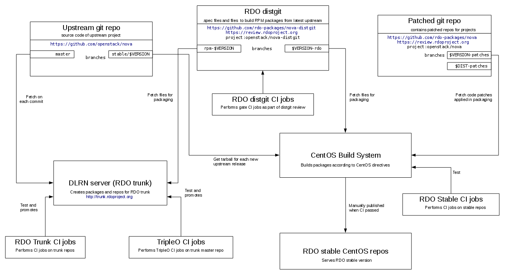

RDO OpenStack Packaging
Packaging overview
RDO produces two set of packages repositories:
-
RDO CloudSIG repositories provide packages of upstream point releases created through a controlled process using CentOS Community Build System. This is kind of "stable RDO".
-
RDO Trunk repositories provide packages of latest upstream code without any additional patches. New packages are created on each commit merged on upstream OpenStack projects.
Following diagram shows the global packaging process in RDO.

distgit - where the .spec file lives
distgit is a git repository which contains .spec file used for building
a RPM package. It also contains other files needed for building source RPM
such as patches to apply, init scripts etc.
RDO packages' distgit repos are hosted on
review.rdoproject.org
and follow $PROJECT-distgit naming. You can navigate the full list of distgit repos using this
link.
You can use rdopkg to clone a RDO package distgit and also setup related
remotes:
$> rdopkg clone openstack-nova
Cloning distgit into ./openstack-nova/
git clone http://review.rdoproject.org/r/p/openstack/nova-distgit.git openstack-nova
...
Inspect package history using git:
$> cd openstack-nova
$> git checkout mitaka-rdo
$> git log --oneline
ded74f2 Add privsep-helper to nova sudoers file
55981cf Add python-microversion-parse dependency
39d576a Update .gitreview
4e53ad0 Add missing python-cryptography BuildRequires
See what rdopkg thinks about current distgit:
$> rdopkg pkgenv
Package: openstack-nova
Version: 13.0.0
Upstream: 13.0.0
Tag style: X.Y.Z
Patches style: review
Dist-git branch: mitaka-rdo
Local patches branch: mitaka-patches
Remote patches branch: patches/mitaka-patches
Remote upstream branch: upstream/master
Patches chain: http://review.rdoproject.org/r/631
Submit distgit changes for review:
$> rdopkg review-spec
Branches in distgits
Because of the different build tools used for RDO CloudSIG and Trunk repos and the differences in dependencies and content in packages for each OpenStack release, RDO maintains several branches in distgits:
- rpm-<release>: is used to package RDO trunk (version can be master, mitaka or liberty )
- <release>-rdo: is used for RDO CloudSIG.
There are a number of expected differences between the spec files in rpm-<release> and <release>-rdo branches:
-
For RDO trunk, packaging has had
Version:andRelease:fields both set toXXXasdlrntakes both of these from the tags set on the git repositories. For <release>-rdo branches they must be manually set to the right version and release. -
%changelog section is empty in rpm-<release>.
-
Because we are packaging vanilla upstream code, patches aren't backported into the RDO Trunk repositories.
-
All of the specs in rpm-<release> branches contain a reference to
%{upstream_version}in the%setup macro, this is because the subdirectory contained in the source tarball contains both the version and release, this is being passed intorpmbuild. In the Fedora packaging, spec can include compatibility macro e.g. Nova to avoid conflicts when backporting change from master packaging. -
The files
sourcesand.gitignorehave been truncated in the master packaging -
In
%filesavoid using%{version}and use instead wildcard*
rpm-master and rpm-master-head branches
As previously stated, the rpm-master branch is used to package RDO Trunk using
the master source branch. However, There are two RDO Trunk builder building
packages from that branch:
-
The main builder, which pins libraries and clients to the versions included in upper-constraints.
-
The master-head, that chases master in all packages, including libraries, clients, etc.
Initially, both builders use the rpm-master distgit branch. However, we may
find an issue for a client or library in master-head that does not show up
on the main builder yet. In those cases, we will create a temporary distgit
branch called rpm-master-head, where the fix will be merged.
Having this temporary rpm-master-head branch will allow us to fix the build
for the package, and once the change in the master repo reaches a tagged release
used by the main builder, we can simply cherry-pick the change and remove
the temporary branch.
Patches branch
Because we rebase often in RDO CloudSIG repos, manual management of patch files in distgit would be unbearable. That's why each distgit branch has an associated patches branch which contains upstream git tree with extra downstream patches on top.
A distgit can be automatically updated by rdopkg to include patches from
associated patches branch and thus RPM patches are managed with git.
Individual RDO patches are maintained in form of gerrit reviews on review.rdoproject.org.
rdopkg
rdopkg is a command line tool that automates many operations on RDO packages including:
- cloning package distgit and setting up remotes
- introducing patches
- rebases to new versions
- sending changes for review
- querying
rdoinfometadata - modifying .spec file: bumping versions, managing patches, writing changelog, producing meaningful commit messages, ...
rdopkg is a Swiss army knife of RDO packaging and it automates a number of
repetitive and error prone processes involving several underlying tools, each
with its own quirks.
Install rdopkg from Fedora/EPEL repos:
$> dnf install rdopkg
rdopkg source lives at
softwarefactory-project.io
but it's also mirrored to
github.
Bugs are tracked as github issues.
Poke jruzicka on #rdo for help/hate/suggestions about rdopkg.
See also man rdopkg.
rdoinfo metadata
rdoinfo is a git repository containing RDO packaging metadata such as
releases, packages, maintainers and more.
rdoinfo lives at
review.rdoproject.org
and is also mirrored to github.
Most of the metadata is stored in rdo.yml and deps.yml, tags and buildsys-tags
are stored in multiple YAML files as described below:
The files under tags and buildsys-tags directories are named based on names of tags and buildsys-tags,
this is defined as follows:-
- release: is a the OpenStack release name, as queens, rocky or stein.
- tag: tag for which project is build, like queens, rocky, stein, train, train-uc, etc.
- phase:
candidatephase is assigned to packages to be rebuilt in CBS but not pushed to any RDO repository.el7-build(only available for Rocky and newer releases) is assigned to packages that only required to build other packages but are not a runtime requirement for any other package.testingphase means that the package is used in deployments using RDO Trunk repo and published in a testing repo, but not official CloudSIG repository.releasephase means that is published in the official CloudSIG repository. This phase is only available after a RDO version has been officially released not for the one currently under development.
To query rdoinfo, use rdopkg info:
$> rdopkg info
$> rdopkg info openstack-nova
$> rdopkg info maintainers:jruzicka@redhat.com
To integrate rdoinfo in your software, use rdopkg.actionmods.rdoinfo
module.
DLRN
DLRN is a tool used to build RPM packages on each commit merged in a set of configurable git repositories. DLRN uses rdoinfo to retrieve the metadata and repositories associated with each project in RDO (code and distgit) and mock to carry out the actual build in an isolated environment.
DLRN is used to build the packages in RDO Trunk repositories that are available from http://trunk.rdoproject.org.
NVR for packages generated by DLRN follows some rules:
- Version is set to MAJOR.MINOR.PATCH of the next upstream version.
- Release is 0.<timestamp>.<short commit hash>
For example openstack-neutron-8.1.1-0.20160531171125.ddfe09c.el7.centos.noarch.rpm.
RDO Trunk Packaging Guide
In RDO Trunk packages are built automatically by DLRN from
.spec templates residing in rpm-master and rpm-$RELEASE distgits.
In order to build an RPM with the master packaging you'll need to
install DLRN,
following the instructions described in this
README.
Run DLRN
Once DLRN is installed, run dlrn for the package you are trying to build.
$> dlrn --config-file projects.ini --local --package-name openstack-cinder
This will clone the distgit for the project you're interested in into
data/openstack-cinder_distro, you can now change this packaging and
rerun the dlrn command in test your changes.
If you have locally changed the packaging make sure to include --dev
in the command line. This switches dlrn into "dev mode" which
causes it to preserve local changes to your packaging between runs so
you can iterate on spec changes. It will also cause the most current
public master repository to be installed in your build image(as some
of its contents will be needed for dependencies) so that the packager
doesn't have to build the entire set of packages.
The output from dlrn is a repository containing the packages you
just built along with the most recent successfully built version of
each package. To find the most recent repository follow the symbolic
link ./data/repos/current
Submitting distgit changes to gerrit
When modifying spec files for RDO Trunk keep in mind the considerations shown
in Branches in distgits and follow the recommendations
in the RDO Packaging Guidelines.
Once you are happy that you have your changes in distgit ready to be reviewed,
create a git commit with an appropriate comment, add a git remote
pointing to gerrit and then submit your patch
$> git review -s
$> git commit -p
$> git review rpm-master
Browsing gerrit for reviews
To look at all open patches for the upstream packaging simply use the this
link and look for your
desired project, for example openstack/cinder-distgit.
RDO CloudSIG Packaging Guide
Packaging files for CloudSIG repos live in $RELEASE-rdo branches of
distgit. Patches can be introduced as needed through associated
patches branch.
Initial repository setup
rdopkg clone takes care of getting the package distgit and
also setting up all relevant git remotes defined in rdoinfo.
Use -u/--review-user option to specify your github username if it differs
from $USER.
$> rdopkg clone openstack-nova -u github-username
Cloning distgit into ./openstack-nova/
git clone http://review.rdoproject.org/r/p/openstack/nova-distgit.git openstack-nova
Adding patches remote...
git remote add patches http://review.rdoproject.org/r/p/openstack/nova.git
Adding upstream remote...
git remote add upstream git://git.openstack.org/openstack/nova
...
Check output of rdopkg pkgenv to see what rdopkg thinks about your
package:
$> cd openstack-nova
$> git checkout mitaka-rdo
$> rdopkg pkgenv
Simple .spec fix
The simplest kind of change that doesn't introduce/remove patches or different source tarball.
- Make required changes.
- Bump
Release. - Provide useful
%changelogentry describing your change. - Commit the distgit changes with meaningful commit message.
- Send the change for review.
Although this change is simple, rdopkg fix can still make some string
manipulation for you. In following example, I add a new dependency to nova
package:
$> cd openstack-nova
$> git checkout mitaka-rdo
$> rdopkg fix
Action required: Edit .spec file as needed and describe changes in changelog.
Once done, run `rdopkg -c` to continue.
$> vim openstack-nova.spec
# Add Requires line and describe the change in %changelog
$> rdopkg -c
After this, rdopkg generates new commit from the %changelog entry you
provided and displays the diff:
Epoch: 1
Version: 13.0.0
-Release: 1%{?dist}
+Release: 2%{?dist}
Summary: OpenStack Compute (nova)
...
Requires: bridge-utils
Requires: sg3_utils
Requires: sysfsutils
+Requires: banana
%description compute
OpenStack Compute (codename Nova) is open source software designed to
...
%changelog
+* Mon May 09 2016 Jakub Ruzicka <jruzicka@redhat.com> 1:13.0.0-2
+- Require banana package for the lulz
+
* Thu Apr 7 2016 Haïkel Guémar <hguemar@fedoraproject.org> - 1:13.0.0-1
- Upstream 13.0.0
Finally, send the changes for review:
$> rdopkg review-spec
Introducing/removing patches
See patches branch for introduction.
Following schema shows the workflow to maintain patches applied in the packaging process.
+------------------------+
| upstream |
| github.com/openstack |
+------------------------+
|
git cherry-pick | rdopkg review-patch
V
+-------------------------+
| patches branch |
| review.rdoproject.org |
+-------------------------+
|
rdopkg patch | rdopkg review-spec
V
+-------------------------+
| distgit |
| review.rdoproject.org |
+-------------------------+
First, use rdopkg get-patches to get a patches branch
associated with current distgit, cherry pick your patch(es) on
top, and send them for review with rdopkg review-patch:
$> git checkout mitaka-rdo
$> rdopkg get-patches
$> git cherry-pick YOUR_PATCH
$> rdopkg review-patch
Once the patch gets approved (not merged), you can tell rdopkg to update the
distgit and send the .spec change for review:
$> git checkout mitaka-rdo
$> rdopkg patch
$> rdopkg review-spec
For more specific example, please see Introducing patches to RDO CloudSIG packages RDO blog post.
Rebasing on new version
tl;dr rdopkg new-version should take care of that:
$> git checkout mitaka-rdo
$> rdopkg new-version
or rdopkg new-version 1.2.3 to select specific version.
Inspect resulting distgit commit and if you need to adjust anything, use
rdopkg amend to amend and regenerate commit message from changelog.
Finally, once happy with your change submit it for review with
$> rdopkg review-spec